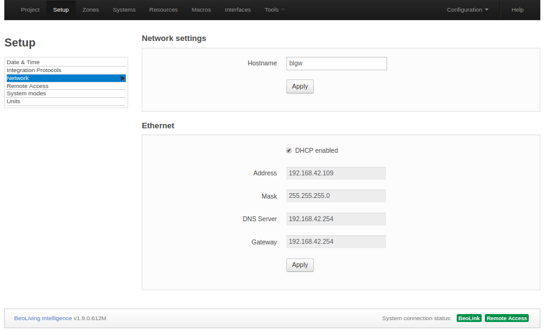

Introduction
The scope of this guide comprise an introduction to BeoLiving Intelligence in PRO mode, a detailed description of its web interface used for configuration/programming your setup and “How to’s” of different features. BeoLiving Intelligence PRO has all of its capabilities unblocked and this guide will let you exploit your Home Automation controller to its maximum.
Before reading this guide, it’s recommended reading BeoLiving Intelligence Quick Setup Guide and BeoLiving Intelligence Advanced User Guide for better understanding of some concepts and useful information, not included in this guide.
BeoLiving Intelligence PRO upgrade enables the unique capability of integrating Bang & Olufsen Network Link systems (audio and video products) with some of the most popular Home Automation systems such as Nest, Philips Hue, KNX, Lutron, among others, creating versatile solutions and a great experience for BeoLiving Intelligence users.
BeoLiving Intelligence PRO web interface is the most important tool for configuration and programming your installation. Certain degree of configuration could be made through BeoLiving App but it’s targeted for user use.
Terminology
- BeoLiving Intelligence: Controller with same capabilities as it comes from out of the box.
- BeoLiving Intelligence PRO: Controller with fully capabilities that could offer after buyable Firmware upgrade.
- BLI: Alias for BeoLiving Intelligence.
- BLI PRO: Alias for BeoLiving Intelligence PRO.
- BLApp: BeoLiving App.
- NL: Network Link.
- LAN: Local Area Network.
- DHCP: Dynamic Host Configuration Protocol.
- HA: Home Automation.
Installation overview
TODO: Diagram
Set up the BeoLiving Intelligence PRO
Setup interface is the most important tool for configuration/programming of your BLI PRO. The following sections will guide you through the entire web interface configuration tool.
In BLI PRO exists a special user admin meant for installer/technician usage. By default, admin password is unknown due to security purposes. To make use of the Setup interface, password for admin user must be resetted by activating the Setup button function (2). After a successfully button function input, admin password will be “admin” during the next 5 mintues (also for security purposes) and after logging in you will be asked to change it.
Project info
The Project page is used to state information regarding the project BeoLiving Intelligence is part of. This information could be useful in any later service situation.
- Project name: Name for the project.
- Display name: Name of the BLI PRO that will be shown in all interfaces (e.g.: BeoLiving App, Webpanel, etc.). Examples of display name are: the family name or the street address of the house.
- Installer name: Name of installer/company in charge of this project for reference.
- Installer contact: Any type of contact information to reach the installer/company in charge of this project for further questions/comments.
Setup
Date & Time
Correct time setting is important for the monitoring of events, astronomic clock events and for time stamping at error log. The system will work even if the time setting is not correct. The date and time settings can be synchronized with universal time servers (recommended) if the BLI PRO has access to the Internet. Else date and time can be set manually.
Date & Time settings
- Date: Settings for year, month and day are entered and then press Set.
- Time: Settings for hours, minutes and seconds are entered and then press Set.
- Synchronize from internet: Synchronizing with an external time server by setting the check mark. Remove the check mark to disable the synchronization with the time server.
- Time zone: Setting for the time zone is chosen from the drop down list. Choices are made based on an appropriate match of ‘Continent’/’City’.
Location settings (Astronomical Clock and Location events)
The Location settings are used by the BLI PRO to calculate, e.g. sunrise and sunset. Events can then be set relative to this. Latitude and longitude are the settings for the astronomic clock. The settings are in decimal degrees. Values are entered in format ‘degrees.minutes’. Seconds are only used to round the minute-value. Positive values are for North and East. Negative values are for South and West.
Integration Protocols
Home Integration protocol allow other devices to interact with BLI. This protocol is used by mobile applications or by other home automation controllers.
Home Integration protocol provides two-way control of all resource types. This protocol can be enabled on the local network, with mandatory authentication. You should provide a TCP port, which defaults to 9100. Port numbers below 1024 are reserved for standard TCP services, so use values above this range.
Network
Network page contains network connectivity configuration of BLI.

The following options are:
- Hostname: Name of BLI as it is found in the LAN.
- DHCP: Enable/Disable DHCP mode. Per factory default, DHCP mode is enabled.
- Address: If DHCP is disabled, the static BLI network address could be setted in Address.
- Mask: Mask related to BLI LAN.
- DNS Server: DNS Server network address in LAN.
- Gateway: Gateway address in LAN.
The settings must be applied by pressing the Apply button.
System modes
BLI PRO can have any number of System modes, which can be used to enable or disable the execution of macros, as follows:
- System modes can be activated by the BLI PRO command SET MODE.
- Any number of modes can exist, but at most one can be active any given time.
- A macro can have any number of modes, and a mode can be set to any number of macros.
- A macro with no mode set will behave normally.
- If a macro has one or more modes set, then it will be triggered by events only if one of those modes is active.
- Typical example of system modes: Vacation and Normal. You can set up a button to toggle between normal and vacation modes. Macros for setting thermostats, or for controlling lighting and shades may be assigned individually to each mode.
Units
The system temperature units can be configured to be Fahrenheit or Celsius, affecting all the clients connected to the BLI PRO. For example, if the current temperature unit is Fahrenheit, then all the thermostats will report the temperature in these units to all connected clients.
This setting only affects what is displayed on BLI PRO user interfaces. It does not affect the units displayed on the actual thermostats.
Zones

Everything in BLI is organized into zones. Zones represent rooms or other locations in the home such as kitchen, hallway, garden, garage, etc. In order to accomodate for big installations, zones themselves are organized into areas. Examples of areas are: upstairs and downstairs, guest house, barbecue.
Areas & Zones
Areas are indicated by text on a grey background in the left column. Zones that are subdividing the areas are indicated by text on a white background in the left column.
Adding areas and zones
Areas are added using the “Add new area” button. When adding an area, a name for this can be stated. An area can be deleted by activating the “x” sign in the greyed area-boxes and renamed by activating the edition-sign next to “x” sign. Zones are added to the areas by activating the “+” sign in the greyed area-boxes.
Zone settings
- Name: Name of zone. In BLI a zone can be one or more rooms in the house or even part of a room, e.g. : living room, kitchen, bedroom. The Name is stated as desired.
- Area: Drop down list of all existent Area´s in the configuration to select where to place the Zone.
- Icon: An icon can be assigned that will be visible in the user interfaces, for easy recognition.
- Delete: Zone selected from the structure can be deleted by activating the Delete button. Systems and resources in a zone that shall be deleted must be rearranged or removed.
Main area
Main area has two special zones:
- global: placeholder zone for systems and their resources that apply to the entire house (recommended; although systems may be placed in areas/zones as desired. Likewise macros that act on several zones at a time such as ‘Party mode’, ‘Welcome’ and ‘Good Night’ may all be added to the ‘Global’ zone. The global zone cannot be deleted and cannot be assigned an icon).
- unassigned resources: placeholder zone for automatically discovered B&O products. BLI discover and adds all products found in its network. Is up to the installer to move those products into their respective Area/Zone.
Systems
The systems settings is for setting-up systems connected to BLI PRO. BeoLink system and HA systems are ‘systems’. Example of supported systems are: Nest, Philips Hue, Lutron, KNX. Check Systems Drivers PRO page to know all HA systems that BLI PRO supports.
Each system has in BLI PRO a correspondant driver. There are two driver types:
- Native driver that is included in BLI PRO firmware and is ready to be added in your BLI.
- External driver located in our cloud. BLI PRO will download and install the external driver if desired.
In this section, only Native drivers will be included. Go to External drivers section for more information.

System settings
Select “+” sign to add a new HA system from the drop down list and press Add system button. A System may be added in a specific Area/Zone if only serves functions there, else if a system serves more zones it may be added to the Main/global zone. Any of the supported systems can be added, except internal systems, which only appear once in the installation, such as BeoLink and Virtual Resources that are added by default. When selecting a system added to one zone, it is possible to select another zone in the Zone drop down list, by which the system is moved to that zone. A system can be renamed and also the configuration and connection settings can be changed. Systems are assigned to zones by the installer, but they are invisible in the user interfaces. For example, assigning a System to a specific zone could be used by the installer to locate system hardware at the installation.
Connection settings
Connection settings depend on each system. Examples of Connection settings are: Connection type, Login, Password, Host, Port, Check server certificate, etc. For specific details on different systems please refer to the online help. The default values must be changed according to the settings used in the installation. Press Apply button to confirm settings.
System status icons
For each system installed, a text string icon is shown in the bottom of the screen. The status of each system is indicated by a colour of the background of the text string icon.
| Color | State |
|---|---|
| Green | Online |
| Orange | Connecting |
| Red | Error |
| Grey | Synchronizing |
This gives a quick status indication on each system. Moving the mouse pointer to each icon displays a pop-up that displays specific logs for that system. If a system cannot connect, the system logs should be checked for information about the problem.
Resources
Resources are provided from the systems installed:
- BeoLink system (NL A/V products and its connected sources)
- Home Automation system(s) (e.g. buttons, sensors)
- Virtual resources (programmed resources e.g. related to a button on a user interface or based on an event)
In the Resources page the resources related to the installed HA system and related buttons (i.e. the components it comprises) can be fetched by using the Capture function or made manually. The Import resources function imports preprogrammed resources in the HA system.
BeoLink resources

The resources have the following parameters:
- Zone: The zone to which the resource belongs.
- Name: Enter a name to ease identification of the resources.
- Type: Select type from the drop down list. The only available resource type is NL product.
- Address: Unique identification of a resource. The format depends on the system. For NL products is the serial number.
- Force Discovery: Forces the product discovery in case it could not be done automatically.
Home Automation system resources

The resources have the following parameters:
- Zone: The zone to which the resource belongs.
- Name: Name to ease identification of the resources.
- Type: Resource type. The type of available resources depends on the actual system, for instance: button, dimmer, shade etc. E.g. a standard button supports PRESS, HOLD and RELEASE actions plus a status indication (e.g. an LED that can be On or Off). Some systems can extend the standard button to provide extra features (see this in the drop down list). The purpose of having standard resource types is that such common set of features are shared by the most supported systems.
- Address: Unique identification of a resource. The format depends on the HA system - using various number scheme.
- Capture: Same as BeoLink resources.
- Import resources: Used to import HA system resources into BLI uploading an specific HA system file or just requesting them directly. This feature depends on each HA system driver.
Virtual resources
An example of a Virtual Resource is a button on the user interface (BLApp, TV overlay menu, WEBPANEL) e.g. a virtual button for cinema scene, or a boolean variable to indicate that a specific condition has been reached. Virtual Resources makes possible to define buttons and variables of String, Integer and Boolean types for systems, without implementing these directly. The BLApp currently uses virtual buttons for displaying scene buttons. Virtual Resources have no functionality by themselves. Macros must be defined to link user actions on a virtual resource, with events and commands in the systems.

The address of a Virtual Resource is a unique number and if isn’t setted manually, BLI PRO generates automatically an un-used address for that resource.
Macros
The interaction between the devices connected to the BLI is defined by means of Macros. A Macro consists in a set of events and commands. When any of the events that are defined in a Macro occur (e.g. a key press on a keypad; a Control Command on a Bang & Olufsen remote control etc .), the macro will be triggered. This means that the commands in the macro will be executed in order.

A Macro is also assigned to an Area/Zone to which it belongs even if it handles activity outside the zone. Having Macros assigned to zones helps when setting up user interfaces. The left column shows all Macros contained in each Area/Zone. To add a Macro in a specific Area/Zone press “+” sign button in the column entry.
For each macro, the next buttons are available:
- Add event: used to add an Event to a Macro. The two buttons (see above) that can be used to set the cinema scene. See Resource Event section.
- Capture: when the Capture button is pressed, all system/resource events fired from that moment will be displayed so that they can be added. Example of events captured could be: the press of a virtual or phisical button, the source selection in a A/V renderer device.
- Add command: used to define the commands of a Macro. See Resource Command section.
- Clone: creates an exact copy of the Macro adding “- Clone n” as subfix to the cloned Macro name, where n is the number of clones made.
- Remove: deletes Macro.
- Fire: fires/triggers Macro.
- Convert to code: switches Macro commands configuration into a Lua editor, turning existant Macro commands into Lua code. Lua commands help is showed after pressing Show Help button. Pressing Convert to table will convert Lua commands into table format.
- Cut/Copy/Paste: when selecting an event/command (pressing left side of event/command), Cut/Copy/Paste buttons become available to use. The purpose, as the meaning of their names illustrate, are for Cut/Copy/Paste Events or Commands on the same Macro or between Macros.
Resource Event
When pressing the Add event button, the window expands, fields for the Resource Event are shown and are filled in by making selections from the drop down lists with each entry field. The illustration is an example only and the drop down list may vary depending on the choices made.
Defining Events
The list of events (for triggering a macro) can be filled in manually or selected from captured events.
There are three types of events:
- Generic: Generic events apply to a number similar events throughout the house. See Generic Programming section for more information.
- Resource: Resource events match a specific event on a specific resource.
- System: System events include calendar and astronomical clock events and system connectivity events.
Resource command
When pressing the Add command button, the window expands, fields for the resource command are shown and are filled in by making selections from the drop down lists with each entry field. The illustration is an example only, and drop down lists may vary depending on the choices made.
Commands are the actions executed when a Macro is triggered. The list of commands are executed in order, and a delay can be set before each command as a combination of seconds and milliseconds. The list can be reordered by dragging the handles at the left of each row, or by clicking on the arrows on the far right of each row.
There are four types of commands:
- Generic: applies to any area or zone, with the possibility of selecting the same area or zone where the event was generated.
- Resource: applies to a specific resource.
- System: acts directly on the systems, which support them.
- Macro: calls other macros, or act on other macros.
Actions on macros
A macro can contain delays between commands and therefore take some time to complete. What happens if during the macro execution another related macro is called? Several commands act on macros:
- FIRE: Call the macro, as if an event for that macro had happened. This is the default action.
- CANCEL: Will stop executing an ongoing macro.
- COLLAPSE: Will execute remaining commands in an ongoing macro, but with no delays between commands.
Firing another macro makes it possibly to take advantage of existing functionality without having to maintain several copies inside different macros. Although not recommended, it is possible to make a loop where a macro calls itself as the last command, e.g. switching Off growth light for plants; night and day temperature control etc. It is required to make a macro that stops such loops.
Macro-considerations
As a macro execution can take some time due to delays between commands, it is important to take care of what could happen if another macro is triggered during the execution.
For instance if a macro called “THEATER ON” (for setting- up a home theater) takes more than one minute to execute, what will happen if this macro is called repeatedly? Will all commands start to overlap each other? What will happen if the “THEATER OFF” macro is called to switch the home theater off during the set-up? It is important to understand that a possible messy overlap of command executions from different macros may occur. The possibility to cancel or collapse a macro being executed ensures that the ongoing macro will end immediately.
In the above mentioned example, the macro to switch the home theater Off should first cancel the macro for setting-up the home theater:
“THEATER OFF” macro commands:
- Cancel “THEATER ON” macro.
- Raise screen.
- Shut down projector.
- Switch Avant to STAND BY.
- Etc.
Orphan commands and events
If commands and events are defined for a resource and the resource is deleted or modified to another address, events and commands will become orphan (without an associated resource). Orphan events and commands will still be available and refer to the original addressing of the resource. The macro screen will signal the presence of orphan commands or events by colour coding and text in the macro header.
Generic programming
Standard events and commands apply to a single specific resource. Generic programming makes it possible to refer to a whole set of resources at once. E.g.: it is possible to specify:
- A single command to mute all products called “BeoPlay V1”.
- An event specification that matches any button pressed that is called “Light On”.
This has the following advantages:
- A single macro can now substitute a lot of macros previously tailored for individual resources and the list of events and commands on a macro can be reduced.
- It encourages a consistent setup throughout the installation.
NOTE: Generic events and commands are matched against all possible resources every time an event occurs or a command is executed. If the name of a resource is changed on a working configuration, the resource will no longer match an existing generic event or command. Therefore, it is important to be consistent when naming resources. It is also important to avoid to spoil functionality by renaming resources.
Command coding
Commands are also represented by a code. The main difference is that there is a new type of selector for matching the same area or zone as of the generating event. A command code starting with $area/$zone/AV renderer/TV will act on all audio and video renderers named “TV” on the same area where the event generated and a command code starting with “*/*/AV renderer/TV” can be used to work with all TVs in the house.
Interfaces
This menu is for setting up users, their rights and interfaces generated by BLI PRO. It is possible to configure the following features:
- Users that can access the system and access restrictions.
- Sources and features of A/V products.
- Access to IP cameras in the house.
- Resources and macros that appear in a zone.
- Virtual resources that provide a friendly way of interacting with some systems.
- Lists with favourite TV channels and radio stations.
The resources to be accessed via the user interfaces are configured in this page. The user interfaces are:
- BLApp
- Overlay menus in the TVs and the Webpanel accessed from a browser.
Configurations are synchronized in real time towards the Webpanel and the TV overlay menu. Synchronization with the BLApp is done periodically and could be forced activating Configuration > Quick save revision.

Users - admin
The user named admin is a user that exists per default and is meant for the technician/installer, who has access for setting-up BLI PRO and is allowed to access all zones via browser or BLApp.
Change password for admin user
As said before per default, admin password is unknown and could be setted to “admin” by activating the Setup button function (2). This password will last 5 minutes (just for security purposes) for being possible to set a new one. Press the admin entry in the left column to change password (see figure above).
Users - new user
To add a new user press “+” sign in header Users of left column.

User properties
Configure User properties by entering a name in the Name field and password in the Password field. Then select options according to the following:
- User management access: when selected, the user is allowed to administer users and user-rights. This option should be set for the owner of the installation or a ‘superuser’ who is responsible for managing user access.
- Edition of user macros: when selected, the user is allowed to create and edit macros from BLApp.
- Controller: should normally be selected. Allows the user to access BLI via BLApp. When disabled, the only access is via the Webpanel.
Select zone access for user
Finally, choices should be made for Select zone access for user. There can be selected All zone access or individual zones from the list presented.
B&O products
For A/V products there are some basic options and a source list that can be presented to the user.
When selecting any product, the next sections are displayed.
NetworkLink product: area/zone/product
- Name: Possible to rename the product.
- Address: The serial number of the product.
- Force IP address: Define a fixed IP address to connect to the product. This is not recommended and should only be used as a workaround in situations where product discovery has shown not to be reliable.
- Beo4 navigation: Whether the product is set up for the old Beo4 navigation or the new navigation with cursor keys and SELECT.
Product sources
For each product all local and distributed sources are showed in Sources in product table. They are synchronized automatically from the product configuration if it’s online. In case of any problem with automatic source synchronization, Force synchronization with product button will get the current sources of the product.
The information provided in the Sources in product section for each source is the following:
- Source: Type of source.
- Name: Label to show with the source in all user interfaces.
- UI Type: Reference for the mobile application about what type of user interface is needed for operating the product.
- Favourites list: This makes it possible to select a favourite list defined in the Favourites section.
- Hidden: Selects if source must be hidden in all user interfaces or not.
Cameras
In this section the configuration for several network cameras can be added. To add a camera, press the “+” sign in the Cameras entry of the left column.
Remove a camera
If a camera must be removed from the list, choose the camera in the left column and press the Remove button.
Camera access
BLI PRO has a simple and strong capability integration with most CCTV systems or IP Cameras found in the market.
To add a camera you must fill the next form:
- Name: Name that identifies the camera. The name will be shown in the user interfaces.
- Zone: Drop down list to select the zone in which the camera is placed.
- Base URL: A Base URL (URL: Port number) to which all commands will be appended must be provided. The format may vary, e.g. http://192.168.1.37:80.
- Base RTSP URL: If your camera supports RTSP protocol with H264 encoded stream format, base URL of RTSP server could be specified (rtsp://URL: Server Port e.g. rtsp://bigserver.com:8001) and Base URL must be left empty.
- Username and Password: The optional Username and Password fields may be used for basic HTTP authentication to access the camera from the user interfaces.
Camera resources path
Video & Images
At least one of resources paths for obtaining Video & Images both in high and low resolution or RTSP stream must be provided, e.g. mjpg/video.cgi for high resolution video. All the commands will be appended to the correspondent base URL.
Pan, Tilt and Zoom commands
If your camera is able to control lens direction and zoom, Pan, Tilt and Zoom paths could be specified and controlled through all user interfaces.
By pressing the Raw edit button a text representation of all the fields appears for setting camera resolutions and commands. It is possible to copy and paste the text when setting up other similar cameras and for each of these to adapt to the actual camera, e.g. adjust to the correct IP-address.
Zone setup
In this section of the Interfaces page, for each zone it is possible to reorder, hide/show and rename the resources as they will be shown in the user interfaces.
Resources for area/zone
For the resource to be moved in the list, place the cursor over the left button (three horizontal lines), then click and hold the left-mouse button and then drag the resource until the line-marking is where the resource should be placed in order and release the mouse button.
- Name: Possibility to rename the resource.
- Type: The type of the resource is stated.
- Hidden: Set if the resource must be shown in user interface.
- Options/Hints: For macros and buttons that are visible on the user interfaces the following options are available:
- Confirm: If this option is enabled, after a button press or after a macro is triggered the action will need confirmation on a hand held device, e.g. pressing a Yes button to avoid unintended activation before the desired function is executed. This could be when an action should not take place unintended, e.g. activating ‘Vacation mode’.
- Compact: When enabled the button in the user interface will be shown in a half-width button. e.g. there is room for two buttons per line.
- On camera view: With ‘On camera’ enabled, when using WebPanel the half-width button will be shown next to the IP camera images in that zone on the user. When BLApp is used, the button will be shown in the Cameras section of BLApp.
- On scenes view: When enabled, the button will be shown in the Scenes section of BLApp
- On dimmer view: When enabled, the button will be shown in the Lights section of BLApp.
- On shade view: When enabled, the button will be shown in the Shade section of BLApp.
- On thermostat view: When enabled, the button will be shown in the Thermostat section of BLApp.
Favourite Lists
In this section of the Interfaces page favourite lists, for TV channels as well as radio stations can be added. In the hand held devices the favourite channels/stations are listed by name and logo if such is selected.
Adding a new favourite list, press the “+” sign in the Favourites Lists column entry. In the field on the top left of the display, enter the name of the source provider. The Clone button (top right) is used to clone an existing source provider of favourites. A new one will show in the left column list, adding ‘Clone of’ to the name. The Remove button is used to remove a source provider of favourites chosen in the left column.
Commands global options
For each favourite list a global End command, a global Delay and a global Delay on source selection that will affect each favourite command can be set.
- End command: The end command is added at the end of each favourite command sequence and can be either NONE, PLAY or SELECT.
- Delay: The global delay is a delay value added between all digits and between digits and the end command for each favourite command.
- Delay on source selection: Delay that will be added previous to the first digit for each favourite command sequence, if source was effectively selected (i.e.: if the source was already selected, this delay will not be set).
List of favourites
For each listed TV channel/radio station the following information should be provided:
- Caption: A short description for the favourite. The caption will be filled in automatically when the logo picker is used. If edited it will remain unmodified. The caption will appear in the user interface.
- Command: The command that is executed when a logo is selected in the BLApp. See in Help for full explanation of combining elements in the command string. The command must be filled in manually.
- Logo: A logo can be fetched using the logopicker, see below, or by entering sufficient information in the URL field for the favourite. The logo will be shown in the user interfaces.
- URL: The full URL of the logo image to show. The URL must point out the valid image as it will be used periodically by BLApp to retrieve the logo. The URL will be filled in automatically when the logo picker is used. The URL can be entered manually.
Logo picker
The logo picker shows a pop-up window for selecting logos from the B&O repository and shows up by clicking the logo. Available logos are shown in groups of 50. It is possible to search for a channel using the filter. A search string will immediately restrict the channels displayed to only the matching entries. When a logo has been chosen the picker window will close and complete the URL path and command fields, and show the selected logo. The caption will also be updated, but not if it has been edited explicitly.
Note: The logo picker only works when Internet connection is available.
Tools
Tools menu contains a set of tools for different purposes as debug, error reporting, firmware update, access to advanced features, direct access to Webpanel and Logout option.
Below, the sub-menus showed after pressing Tools menu option are described.
Monitor
Monitor shows a list of the latest actions which have occurred - events, macros and commands. The menu can be used for the following:
- To find the precise addressing of a specific component. If a keypad, a sensor, etc. is pressed on the HA system, the event generated will be monitored by the tool.
- To check whether macros and the belonging commands are working as intended.

On the upper-right side of Monitor’s page, it’s located a filter tool to facilitate the processing of Monitor information.
Resource states
Resource states shows a table of all resources in the installation and their current states. For each row, you could find the resource name at first column and all states in the second one.

In the upper-right you could find a Filter tool where you could filter by resource name or state.
Log
Log shows system messages concerning the interaction between the BLI PRO and external devices connected, such as application errors and critical system errors.

The log menu can be used to:
- Verify the connection to external devices. Errors will be shown.
- Check of incoming HIP connections.
The size of the system log is limited, which means that old messages will be deleted when new messages appear.
Service report
When any hardware or software error is experienced it is possible to create a service report containing the necessary information about your BLI for solving any potential issue.
You must fill the form showed in that page. This information is essential to reproduce and fix any issue you are experiencing.

Service reports are created and downloaded when the Save button is clicked.
Firmware
The Firmware page allows to check and apply updates for the BLI Firmware. There are two ways to perform such updates:
- Manually uploading a BLI firmware file.
- Online update via Internet.
Manual update
Press the Choose File button to select your local BLI firmware file. Automatically will be uploaded to BLI and the update should begin immediately.
Online update
To perform an online update of BLI’s firmware you must ensure that LAN network has Internet connection.

In this page you will find:
- Check for the latest version: After pressed, the lastest official Firmware version will be displayed, if available.
- Start online update: If a new Firmware version is available for download, pressing this button will start the Firmware download and installation process.
- Automatic updates: Enable/Disable automatic BLI Firmware updates. If this option is selected, then the BLI firmware will be automatically kept up to date.
Go to Webpanel
Direct access to Webpanel.
Logout
Logout of the current logged in user.
Advanced
Programming report
Programming report is an effective tool to find which Macro interacts with a specific Resource or System, really useful when BLI PRO contains many of them in his configuration.

Left column contains each pair of Area/Zone that contains at least one resource or system. For each resource or system in a column, the next information will be displayed:
Macros being fired by this resource/system
The table contains a row for each Macro where an event of resource/system is involved.
- Macros: Name of all macros that have this resource/system as an event.
- Events on area/zone/name: Events of resource/system in this macro.
- Commands: Commands of this macro.
Macros that execute commands by this resource/system
The table contains a row for each Macro where a command on resource/system is involved.
- Macros: Name of all Macros that executes a command on resource/system.
- Events: Events in this Macro.
- Commands on area/zone/name: Commands on resource/system in this Macro.
Custom driver editor
BLI PRO offers the option to load your own driver into your configuration. Drivers must have a specific format and must be programmed in Lua language. For more information regarding development of BLI PRO custom drivers refer to Driver Development Guide.
Install external drivers
As explained in Systems section, external drivers are located in our own repository from where they could be installed in your BLI PRO if internet connection is available.

The list of all available external drivers could be obtained by pressing Update drivers list from remote repository button and Show only installed drivers button will display external drivers currently installed. Also, next to the mentioned buttons, a Filter tool is placed for filter by driver name.
The table showing external drivers available/installed displays:
- Name: External driver name.
- Description: Short description of external driver.
- Available version: Version of external driver available in repository.
- Installed version: Version of external driver currently installed.
- Action: Install if external driver installation is desired or Remove to remove it from the current configuration.
Install a custom driver using file
Same functionality offered in Custom driver editor page.
Configuration
Configuration page contains tools related to BLI configuration, for e.g. download current configuration into a local file, upload BLI configuration from a local file or create snapshot of your current configuration in case a modification will be made and you want the possibility to rollback your configuration. Below, the different tools of Configuration page are described.
Save revision
Saving a revision means saving the current configuration internally in the BLI. In the Description entry field, a tag can be entered which will be added as the revision label with the following syntax: rNN | Jan 25, 2015 08:55:37 PM | <tag>, where NN is a revision number. Such savings are useful when changes have been made to the configuration. The saved revision is available in the Revision history list where it is placed in the bottom of the list and from where it can be restored. The current configuration is saved internally in the BLI when the Save button is pressed. By this the recent autosaved file (see below) will be discarded.
Up to ten revisions of the configuration can be saved. If a manually Save revision is not made the recent autosaved file will be the recent saved configuration.
When a configuration of the BLI takes place and the operator has not saved it by a manual Save revision action, the configuration will be saved every 5 minutes if configuration activities are ongoing - since last time autosave took place. If configurations are made and left unsaved and the BLI is idle for more than 30 seconds, autosave will also take place. These files are added to the Revision history list and marked with the tag: “Auto save”.
When the autosaved configuration is newer than the manually made Save revision and in case power is failing or any other malfunctioning of the system occurs, the BLI will - when restarted - get use of the autosaved configuration file.
Quick save revision
Quick save revision works similar to Save revision but with the difference that in Revision history there is only one Quick save revision of the configuration and each Quick save revision made will overwrite the previous one. This tool is useful for saving an instant image of BLI configuration when small changes in the programming are being made. Keys shortcut for Quick save revision is Ctrl+Shift+S.
Load from file
Used to upload a configuration file from your local drive; where the file was saved at an earlier stage (see Download to file section). By selecting Configuration > Load from file a configuration file can be uploaded into the BLI. The uploaded configuration will become active immediately and substitute the current configuration.
Download to file
Used to download current configuration to your local drive. By selecting Configuration > Download to file the current configuration will be downloaded. It is recommended to have such configuration file as a reference or as a back-up if a problem occurs.
Revision history
The BLI keeps a record of the latest ten configuration revisions. A new revision can be saved and marked with relevant tag information by selecting Configuration > Save revision. Autosaved and Quick saved revisions are listed in the Revision history and are marked with the tags “Auto save” and “Quick save”.
Help
BLI contains an entire Help section that covers every functionality, section and HA system present in BLI. Use this section as a good complement of BeoLiving Intelligence PRO User Guide.